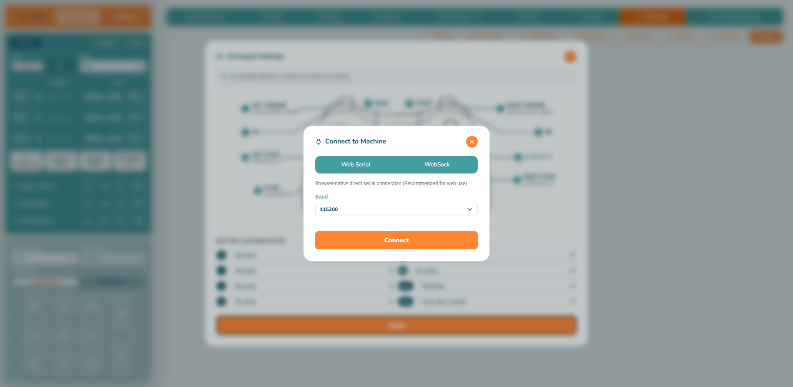
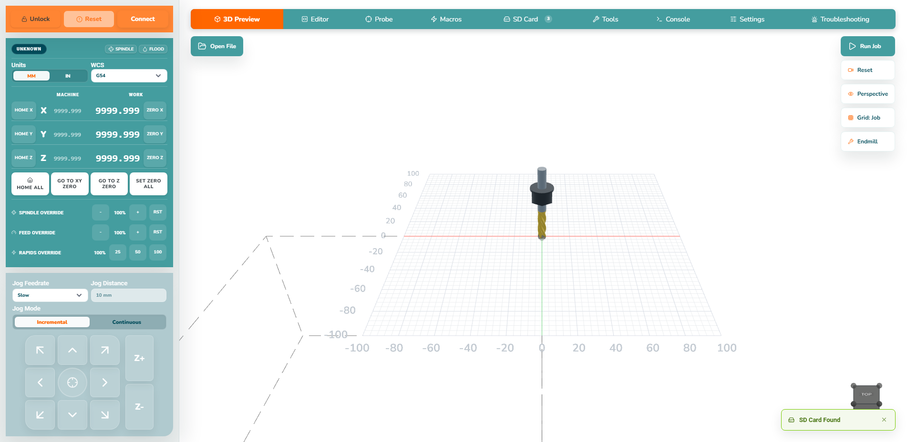

Before connecting
- Fit the cutter with power isolated, secure the material, remove spanners and keep the emergency stop reachable.
- Check the intended cutter, material, clamps, work envelope and Safe Z clearance.
- Have the correct controller firmware/configuration and the G-code file’s expected units/WCS available.
Connection choice
| Platform | Choose | Expected flow |
|---|---|---|
| Chrome/Edge hosted site | Web Serial | Click Connect, choose the controller serial device, then connect. |
| Electron desktop app | USB | Choose the OS serial port. The packaged-app capture is pending. |
| Configured network controller | WebSock or WiFi/Ethernet | Use the known address/port. Never guess an IP. |

The sequence
- Connect. Stop if the app remains
UNKNOWNor reports an error. - Home. Clear the travel and use Home All when the WorkBee procedure requires a repeatable machine reference. Homing is not work zero.
- Choose WCS. Select the coordinate system expected by the file, normally G54 for a first job.
- Set work zero. Jog to the intended material origin and use Set Zero All or the individual zero controls.
- Load and inspect. Check filename, dimensions, origin, depth, toolpath and Safe Z in 3D Preview.
- Run cautiously. Confirm clamps and clearance, then Run Job. This starts real machine motion.
- Stop on disagreement. Use the emergency stop if necessary and record the exact status/alarm and last action.

Do not copy demo values. Coordinates, macros, tool values and G-code shown in documentation images are illustrative only.